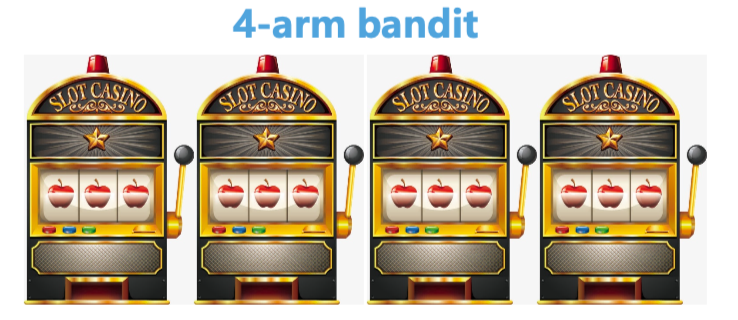
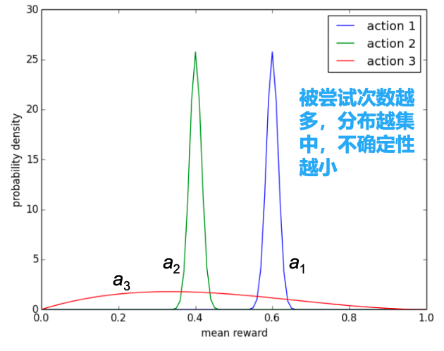

多臂老虎机与探索问题
多臂老虎机与探索问题
文章逻辑: 1. 描述老虎机问题 2. 描述老虎机问题求解的一般过程 3. 介绍纯贪心策略和\(\epsilon\)-greedy策略 4. 引入强化学习的基本问题: 平衡探索与利用 5. 介绍常用的平衡探索和利用的方法
老虎机问题的描述

- 每台老虎机的期望收益不同, 假设中一次大奖100元,其他情况均没有钱
- 四台机器中大奖的概率分别为1%, 5%, 10%和20%
- 每拉一次拉杆需要10元, 而你共有1000元, 在不知道每台机器的期望收益的情况下, 如何让拉100次拉杆赚的更多?
形式描述
多臂老虎机(multi-arm bandit)问题:
动作集合: \(a^i \in \mathcal{A}, i=1,\dots,K\)
奖励概率分布: \(\mathcal{R}(r|a^i) = \mathbb{P}(r|a^i)\)
目标: 最大化累计奖励\(\max \sum\limits_{t=1}^{T} r_t, r_t \sim \mathcal{R}(\cdot|a_t)\)
问题: 每次选择拉哪个摇臂的时候，如果能有一个什么样的东西辅助我们来做决定就好了呢？
如何对多臂老虎机问题进行收益估计
假如某台老虎机我们已经尝试了\(n-1\)次, 那么它的期望收益可以用如下公式评估:
\[ Q_n(a^i) = \frac{r_1 + r_2 + ... + r_{n-1}}{n-1} \]
这是一个很符合直觉的评估公式, 但是如果每一轮都使用以上公式进行评估, 我们每次计算\(Q\)的时间复杂度就变成了\(O(n)\), 空间复杂度也为\(O(n)\)
我们更进一步的使用了上述公式的增量实现:
\[ Q_{n+1}(a^i) := \frac{1}{n}\sum\limits_{i=1}^{n} = \frac{1}{n}(r_n + \frac{n-1}{n-1}\sum\limits_{n-1}^{i=1} r_i) = \frac{1}{n} r_n + \frac{n-1}{n} Q_n = Q_n(a^i) + \frac{1}{n} (r_n - Q_n(a^i)) \]
这样, 每次我们计算\(Q\)时, 每次计算的复杂度为\(O(1)\), 空间复杂度也为\(O(1)\)
求解多臂老虎机问题
当我们能够评估每台老虎机的期望收益时, 我们可以如何利用它来做决策呢?
解决思路:
- 给每个摇臂/老虎机初始化一个期望收益, 例如都初始化为0
- 每次按照贪心的策略, 选择期望收益最大的摇臂, 如果有一样的就随机选一个
- 执行一次获得反馈后, 更新对应摇臂/老虎机的期望收益估计
- 重复执行
2.和3.步, 直到花光预算
这是一个朴素的解决思路, 简单的说就是: 边利用当前收益评估来决策, 边用反馈更新每台老虎机的期望收益评估
用伪代码的形式表述如下:
- 初始化: \(Q(a^i) := 0, N(a^i) = 0, i = 1,\dots, n\). 共有\(n\)个老虎机
- 主循环 \(t = 1:T\)
- 利用策略\(\pi\)选取某个动作, 记为\(a_t\)
- 获取收益: \(r_t = Bandit(a_t)\)
- 更新计数器: \(N(a_t) := N(a_t) + 1\)
- 更新估值: \(Q(a_t) := Q(a_t) + \frac{1}{N(a_t)} [r_t - Q(a_t)]\)
\(Q(a)\)为价值函数, 指在某个状态下, 选择某个动作获得回报的期望
\(a_t\)并不是指第\(t\)个老虎机, 而是指第\(t\)步所选择的那个老虎机
\(T\)指总预算数
贪心可能面临的问题
贪心的本质是对眼前最好选择的极致利用.
贪心策略的缺点是: 即使你已知贪心认为的最好的选择可能并不是真正最好的选择, 但是继续贪心已经无法跳出当前状态.
这个时候我们希望能够跳出眼前的最好选择, 适当进行更大范围的探索.
强化学习的一个基本问题——探索与利用的平衡
强化学习的基本问题: 如何平衡探索(exploration)与利用(exploitation)?
- 探索: 尝试不同的选择寻找最优
- 利用: 基于当前策略, 执行能够获得已知最优收益的决策
引入探索策略
- 纯贪心策略
对应伪代码中策略\(\pi\)为贪心策略(greedy)
首先对每一个\(a^i\)计算:
\[ Q(a^i) = \frac{1}{N(a^i)} \sum\limits_{t=1}^{T} r_t \cdot 1(a_t = a^i) \]
然后基于贪心思想选取动作:
\[ a^* = \mathop{\arg\max}\limits_{a^i} Q(a^i) \]
其中:
- \(r_t\): 代表\(t\)时刻选择动作\(a_t\)获得的奖励
- \(1(a_t = a^i)\): 代表当\(a_t = a^i\)时返回\(1\), 其他情况返回\(0\)
- \(N(a^i)\): 代表从\(1\)到\(T\)中\(a^i\)出现过的总次数
- 引入探索的贪心策略(\(\epsilon\)-greedy策略)
此策略下, 我们选取动作的步骤为:
\[ a_t = \begin{cases} \mathop{\arg\max}\limits_{a} Q(a) & 采样概率: 1 - \epsilon \\ U(0, |\mathcal{A}|) & 采样概率: \epsilon \end{cases} \]
其中:
- \(\mathcal{A}\): 代表动作空间
- \(|\mathop{A}|\): 代表可选动作的个数
- \(U\): 代表均匀分布
引入Regret后悔值
每个决策的期望收益: \(Q(a^i) = \mathbb{E}_{r\sim \mathbb{P}(r|a^i)}[r]\)
最优决策的期望: \(Q^* = \max\limits_{a^i \in \mathcal{A}}Q(a^i)\)
Regret就是决策与最优决策的期望收益差: \(R(a^i) = Q^* - Q(a^i)\)
Total Regret累计懊悔函数: \(\sigma_R = \mathbb{E}_{a \sim
\pi}|\sum\limits_{t=1}^{T}R(a^i_t)|\)
\(\mathbb{E}_{a \sim \pi}|\sum\limits_{t=1}^{T}R(a^i_t)|\)不是指对累积的结果求平均, 而是对\(R(a^i_t)\)求平均(即\(\sum\limits_{t=1}^{T}R(a^i_t) / T\))
现在我们就可以得到纯策略和\(\epsilon\)-greedy策略下的累计懊悔函数:
- 贪心策略
\[ \sigma_R \propto T \cdot [Q(a^i) - Q^*] \]
\(\propto\): 代表线性增长
- \(\epsilon\)-greedy策略
\[ \sigma_R \ge \frac{\epsilon}{|\mathcal{A}|}\sum \limits_{a\in \mathcal{A}} \bigtriangleup_a \]
\(\bigtriangleup_a\): 每个\(a\)的期望收益与最优期望收益差
在\(Q(a)\)学到了最优策略时上式取等
上式给出了\(\epsilon\)-greedy策略的懊悔值下限
探索与利用的平衡
\(\epsilon\)-greedy策略通过引入一定概率的随机探索, 使我们可以跳出局部最优. 出了这种随机探索, 我们还有一些别的探索方法:
乐观初始化法
方法: 给每个动作的\(Q(a^i)\)一个较高的初始化值
原理: 尝试次数较少的动作将受到鼓励
显式地考虑动作的价值分布法
观察下图:

然后更改策略为:
\[ \pi: a = \mathop{\arg\max}\limits_{a\in \mathcal{A}}(\hat{Q}(a) + \hat{U}(a)) \]
\(\hat{U}(a)\)代表此时动作\(a\)的不确定性
此时, \(N(a)\)越大, \(U(a)\)越小, 也就是动作\(a\)被尝试次数越多, 其不确定度越小, 更不容易被选择.